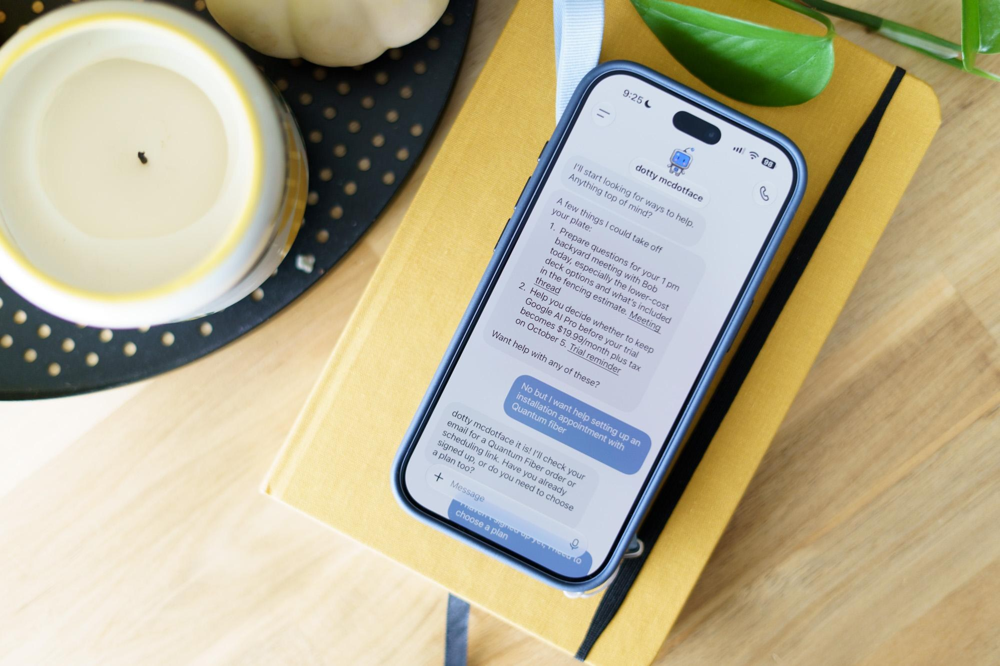

На этой неделе OpenAI представила платформу Dots — постоянных агентов, которые живут в ChatGPT, Slack и Teams и не бросают задачу на полуслове: агент берёт её «в постоянное пользование» и сам продвигается к цели между обращениями. У каждого Dots — собственный облачный виртуальный компьютер, где из коробки стоят приложения вроде Blender и GIMP; через десктопное приложение ChatGPT агенту можно открыть доступ и к своему собственному компьютеру. А ещё в агента можно позвонить, чтобы проговорить задачу вслух.
Журналистка The Verge Элисон Джонсон тестировала агента на тарифе Pro за $100 в месяц. Dot нашёл в почте удалённую промо-скидку на $100 и едва не записал хозяйку на установку интернета, но в итоге застрял на «человеческой проверке»: капча с удержанием мыши оказалась ему неподъёмной. Позиционируется Dots при этом не как персональный шоппер (в отличие от свежего Meta Muse), а как «корпоративное ПО, которое умеет пользоваться другим ПО».
OpenAI выкатывает Dots сначала пользователям верхних тарифов — от Pro за $100 в месяц. Для сравнения: прямой конкурент от Meta, агент Muse (и его версия Instinct), пока бесплатен — и именно это, по мнению The Verge, многое говорит о том, для кого сделан продукт OpenAI, несмотря на «милых» округлых аватаров с настраиваемыми именами. Сейчас пользователю дают одного Dots, возможность завести несколько обещана позже.
Страницы официального анонса (openai.com/index/introducing-dots и chatgpt.com/features/dots) не открываются без JavaScript, поэтому ключевые цифры в этой статье сверены по открытому тексту The Verge и карточкам продукта. Отдельного пресс-релиза с цифрами тарифов OpenAI не публиковала — это стоит помнить, сравнивая marketing-обещания «может делать почти всё» с реальным поведением агента на капче.